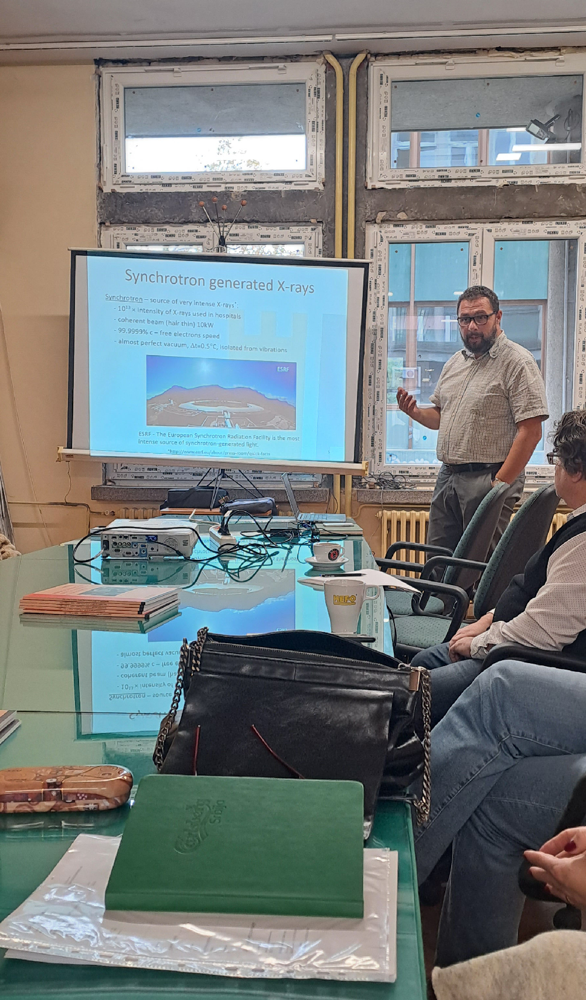
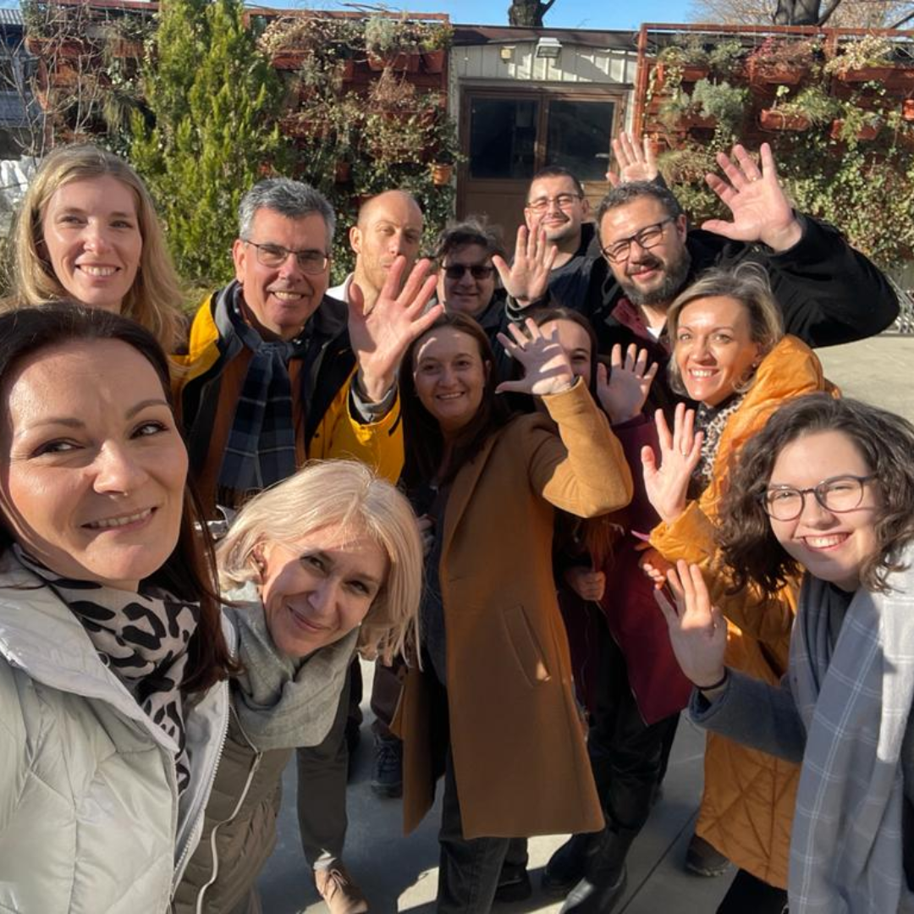
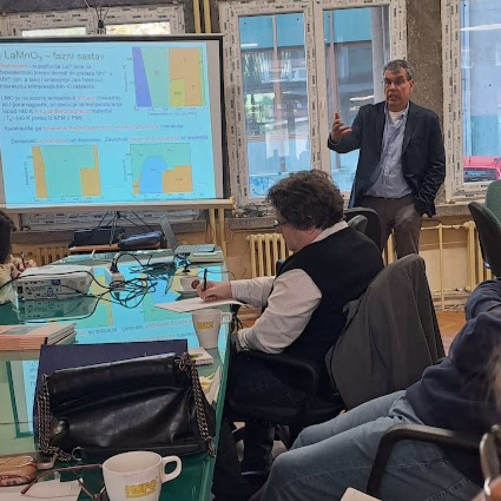
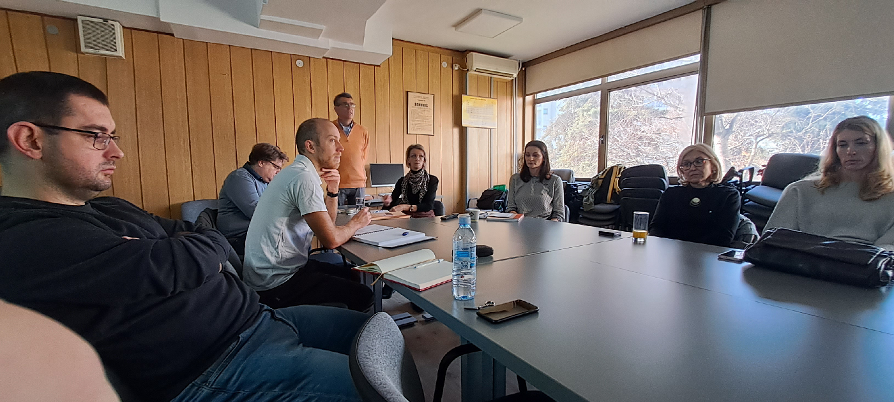
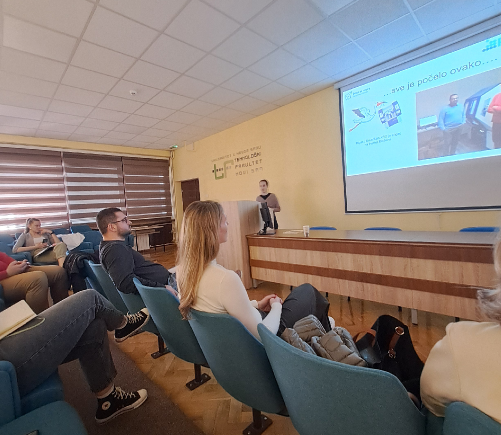

Meetings
-
PROMTEH-Project Meeting-1, December 4, 2023, Novi Sad, Serbia
Lecture: Bojan Miljević, “Non-destructive characterization of nanomaterials using X-rays scattering methods – Rocking curve analysis”
-
PROMTEH-Project Meeting-2, January 26, 2024, Belgrade, Serbia
Lecture: Ivan Stijepović, “X-ray absorption spectroscopy”
Lecture: Nikola Ilić, “Application of MOKE for characterization of thin films”
-
PROMTEH-Project Meeting-3, March 24, 2024, Novi Sad, Serbia
Lecture: Vladimir V. Srdić, “Electro-optical characterization of thin films”
-
PROMTEH-Project Meeting-4, June 4, 2024, Belgrade, Serbia
Lecture: Jelena Vukmirović, “Sheet resistance of ultra thin oxide films”
-
PROMTEH-Project Meeting-5, September 25, 2024, Novi Sad, Serbia
Lecture: “XRD analyses of thin epitaxial films – Our experiences with Rigaku SmartLab”
Vladimir V. Srdić
Presentation: Danica Piper, “XX Conference of Electroceramics in Novom Sadu, 2026”
-
PROMTEH-Project Meeting-6, November 19, 2024, Belgrade, Serbia
Lecture: Bojan Miljević, “In-plane measurements by XRD Rigaku SmartLab II”





-
Spin-coater - Ossila
The spin-coater is used for deposition of single and multi-layer film heterostructures.
-
Vision Piezo Software - Radiant Technology
The software upgraded the existing Multifferoic II ferroelectric test system and is used for functional characterization.
-
Linkam HFS600E-PB4 Stage
The stage is used for characterization of multifunctionality of thin films.
-
SERS Introductory Slide Kit
The SERS is used to significantly improve the weak Raman signal by surface-enhanced Raman scattering effect.